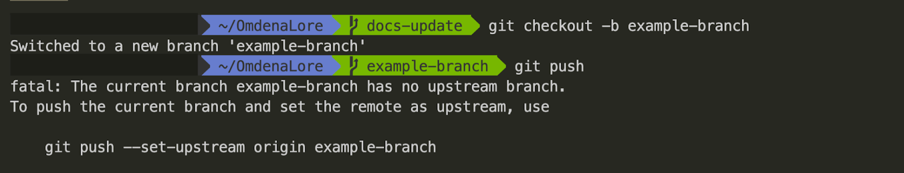
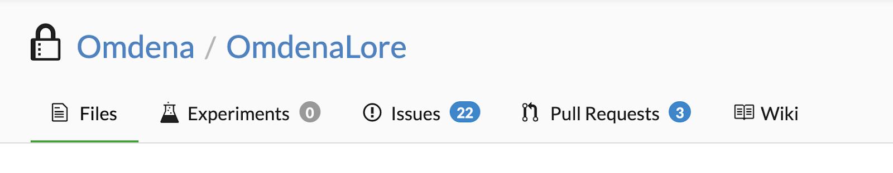
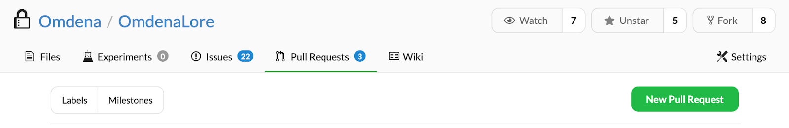
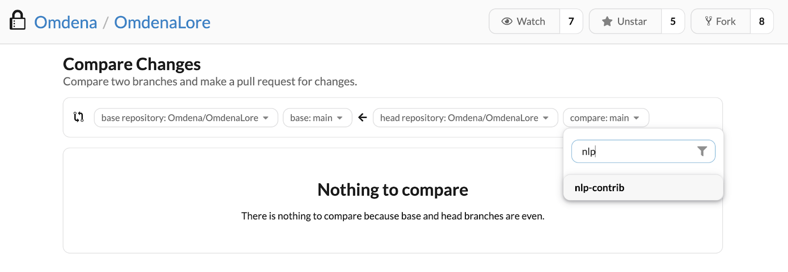
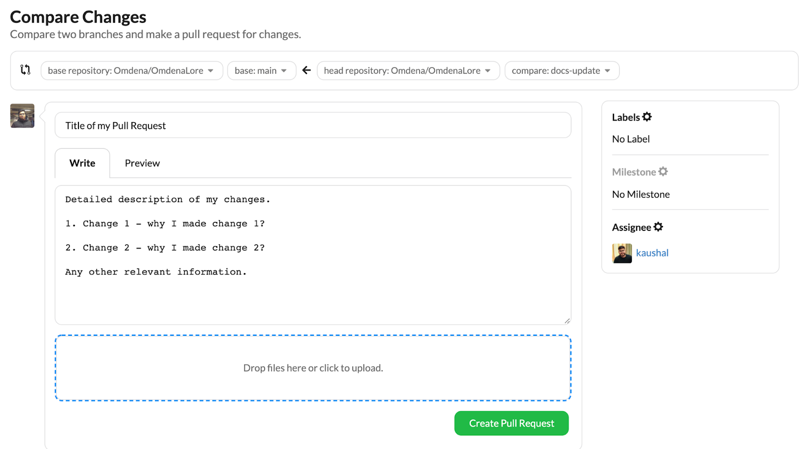

As the name suggests, OmdenaLore is a body of knowledge held by Omdena. OmdenaLore is a library/package that contains code knowledge base gathered in completed and ongoing projects. The code knowledge base increases and gets updated as collaborators add their knowledge in future projects. OmdenaLore is a collaborator sourced structured library. It is closed for Omdena community members.
Configurations: All config.py / config.json files containing static variable, paths etc to be stored here. The configs can be stored in different files for different subpackages/subcomponents.
Readme.MD : Documentation of the code.
Requirements.py: pip requirements and dependencies management.
Setup.py: Package distribution and management/
Tools: This is non non-accessible module of the package from the root directory. This is where files are stored that we don’t want package installers to see or use.
Docs: This is where log and test cases will be stored. It will tell us where our project’s last testing was done and what have we done yet.
Sample: This folder contains all the code that are not functions but complete demos of a particular task. For example, a class or function that detects cars using a particular dataset is considered a demo / reference code and should be inserted in this directory.
Components: This is where we will collect all the usable codes. The subcomponents can be added more to what we have defined yet. All helper functions can be separated into different modules or either store them in utils. If the helper functions are insignificant and are not lengthy, my suggestion is to keep them in utils.py file.
Test: This is the module where we’ll keep all our test cases and files. As we move ahead the number of tests will increase. We can create as many test cases as possible to make sure that the functions do not crash with later updates.
Makefile: Defining generic tasks for the project like pipinstall-rrequirements.txt
If you have a code block that can help collaborators in current or future projects, you can add that code block to the OmdenaLore repository. The contributions to OmdenaLore repository go through peer-to-peer reviews, more details below. To make sure a valid contribution is made, please follow the steps below.
You can clone the repository locally with the following command in your terminal/Powershell: git clone https://dagshub.com/Omdena/OmdenaLore.git
If you are not comfortable with the terminal, you can use the GitHub desktop option as well.
After localizing the repository, we recommend that you open a issue explaining what you are working on. Since OmdenaLore is a collaborative platform, we wish to have great communication between you and fellow contributors and opening an issue is a good way to do so.
To open an issue, head to dagshub.com/omdenalore and click on the issue section. Create or find an issue according to your problem statement.
Once inside the local folder of the repository, make a new git branch from the main branch. Let’s say you are adding code to the nlp folder and you would like to make a nlp-contrib branch. You can do this with the following command - git checkout -b nlp-contrib . To quickly familiarize yourself with git branches, read this official primer here.
We recommend that you make a branch with your own name or the issues that you are working on. Example branch names - issues_44, john_doe, …
If you are the first one to work on that branch, it does not exist yet on DAGsHub. When you try the git push command, you might hit this error:

In this example, the branch example-branch is unrecognized by the repository online. To fix this error, run the command git automatically recommends, which in the case shown above would be: git push –set-upstream origin example-branch
Once you have pushed your branch successfully, it is time to open a Pull Request on DAGsHub.
On the repository webpage, go to the Pull Requests section.

Click on New Pull Request

On the right side of the webpage, pick the branch you want to open a Pull Request with. This branch contains the changes you are requesting to be merged into the main branch of the repository. Search for the name of your branch and select it.

IMPORTANT: This step is of utmost importance for your Pull Request’s final phase. Make sure you are adequately documenting your Pull Request with clear and concise summary points on the changes you have made. You can even upload images in this process. This will help the Pull Request reviewers understand the changes and request any changes if required. In the example below, I am making a Pull Request for my docs-update branch. Please find more information on the PR template here.

Notice the Assignee option on the right side. Here you can click on Assign and assign another collaborator you are working with if you wish to request feedback about the Pull Request or even request additional features on top of your changes. Here I assigned the Pull Request to my colleague to get this feedback on my changes.
That’s it! Now you can click Create Pull Request and share your Pull Request link in the slack channel. One of the reviewers will get to it and share their feedback with you and request to make any adjustments if required. After that, your PR will be merged into the main branch.
Whenever a pull request (PR) is generated, it’s highly recommended for collaborators to include these sections in the PR description.
It makes PR approval and review process faster and efficient.
Guidelines to be followed for your code to get accepted
“TODO(author):” Add this when you have to take up an edit to a function in future.
Try to avoid circular dependencies. In this case, include common dependencies in a single utils files
Avoid global variable and it’s accessibility
To keep in line with the style guide, keep module names short, lowercase, and be sure to avoid using special symbols
Use time, tqdm and log decorators where necessary
Keep return types immutable if possible
If a function take an input of another function, extensively check the format and type of input to avoid any crashes in future
Constantly test your code by adding test cases in the tests module
Never miss out on adding doc strings. This will help us to create documentation automatically once the package is done.
Try to use black, flake8 and isort for linting the code to ensure consistency across modules.
Please find the doc string format for functions at the end of this document.
Additionally, please check your code for points below
Do not work on the main branch of the repository. Please create your own branch and merge it with a pull request.
Do not publish your github ids or password in your code
Double check any configuration file which may contain any confidential information
Make sure not to upload any datasets, images, csv or any files which are not code.
If you want to reference a dataset for your sample code, you can reference a public link of the dataset inside the doc string of your functions.
Make sure your function is properly named and does not contain the same characters as another function in the same module.
Please check if a similar function is available in the repository before pushing your code.
Do not change the directory structure of the repository.
Fetch from the main branch before making a pull request.